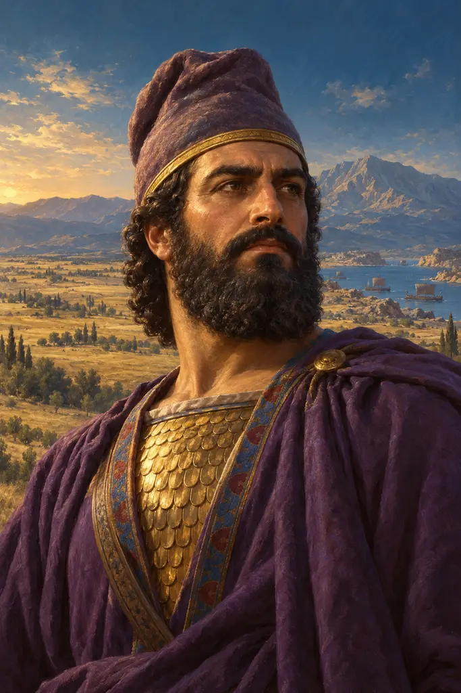
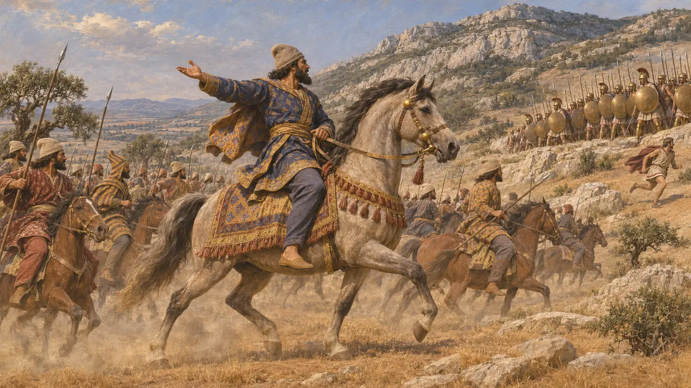
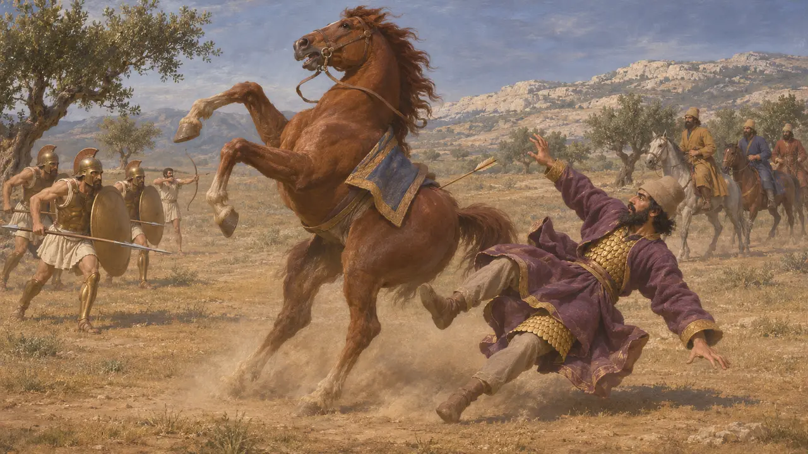
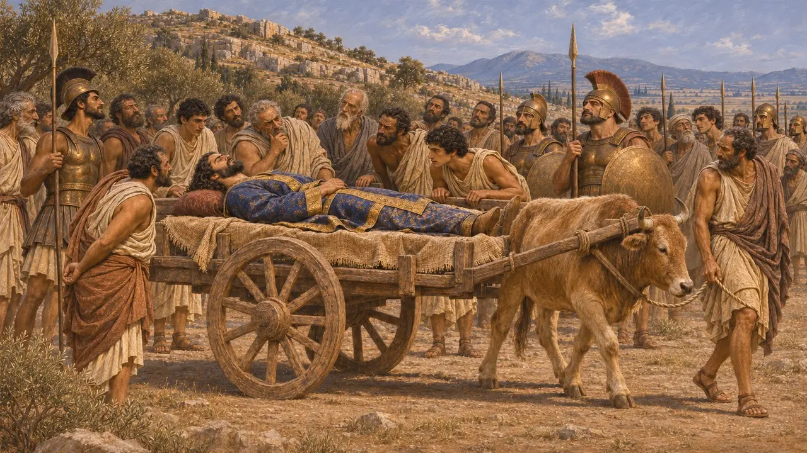
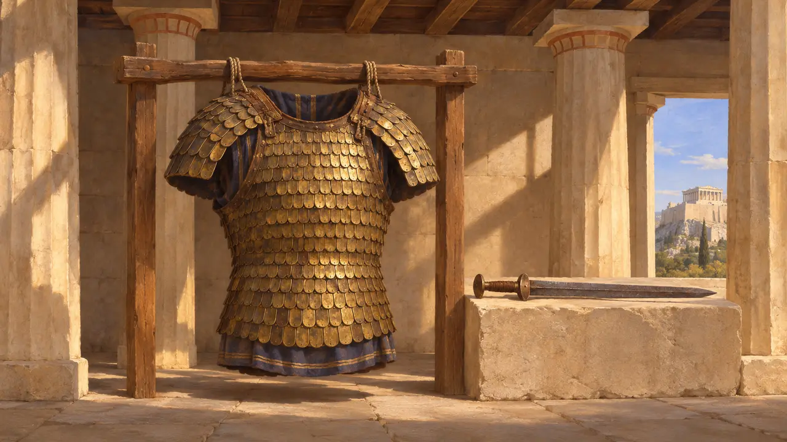
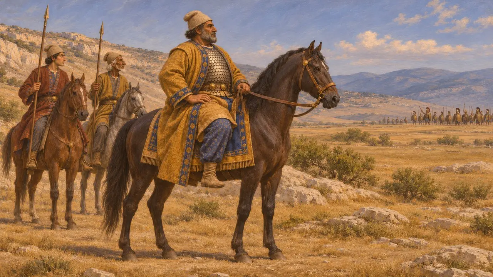

Masistios
Persischer Reiterführer unter Mardonios, gefallen bei Erythrai in Böotien 479 v. Chr.
Im Spiel: Level 11: Das Finale
Masistios führte die persische Reiterei in den ersten Gefechten vor der Schlacht bei Plataiai 479 v. Chr. Herodot zufolge schätzten ihn die Perser und der König nach Mardonios höher als jeden anderen Mann. Sein Tod bei einem Reiterangriff nahe Erythrai bescherte den Griechen ihren ersten Erfolg des Feldzugs. Er stärkte ihre Zuversicht, und bald darauf stiegen sie von den Hängen des Kithairon auf besser bewässertes Gelände bei Plataiai hinab.
Im Spiel: Die Chronik des Spiels nennt Masistios als Befehlshaber der Reiterei vor Plataiai, der auf einem Nisäischen Pferd mit goldener Trense ritt und bei Erythrai fiel. Das folgt Herodot; es ist kein persisches Dokument bekannt, das ihn erwähnt.

Befehlshaber der Reiterei
Antiker BerichtHerodot berichtet, Mardonios habe seine gesamte Reiterei unter dem Befehl des Masistios gegen die Griechen geschickt, die an den unteren Hängen des Kithairon lagerten. Masistios ritt ein Nisäisches Pferd mit goldenem Gebiss und prächtigem Zaumzeug. Die Reiter griffen in Schwadronen an und verhöhnten die Griechen als Weiber. Die Megarer hielten den am stärksten ausgesetzten Abschnitt und ließen melden, sie könnten ohne Hilfe nicht standhalten.
Herodotus 9.20-21

Der Kampf bei Erythrai
Antiker BerichtNach Herodots Erzählung zogen dreihundert auserlesene Athener unter Olympiodoros mit Bogenschützen den Megarern zu Hilfe. Ein Pfeil traf das Pferd des Masistios in die Flanke; es bäumte sich auf und warf ihn ab. Er trug unter einem purpurnen Gewand einen Panzer aus goldenen Schuppen, sodass die Hiebe nichts ausrichteten, bis ihm ein Mann ins Auge stach. Die persische Reiterei kämpfte um den Leichnam, wich aber zurück, als weitere griechische Fußtruppen heranrückten.
Herodotus 9.21-23

Die Trauer und der Leichnam auf dem Wagen
Antiker BerichtHerodot berichtet, Mardonios und das Heer hätten Masistios betrauert, indem sie sich selbst die Köpfe und ihren Pferden und Zugtieren die Mähnen schoren, und ihr Wehklagen sei durch ganz Böotien gedrungen. Die Griechen legten seinen Leichnam auf einen Wagen und fuhren ihn an ihren Linien entlang, weil Männer ihre Posten verließen, um seine Größe und Schönheit zu sehen. Bald darauf bezogen die Griechen neue Stellungen nahe Plataiai.
Herodotus 9.24-25

Der Panzer in Athen
Antiker BerichtPausanias, der im 2. Jahrhundert n. Chr. schrieb, berichtet, der Brustpanzer des Masistios sei im Tempel der Athena Polias auf der Akropolis aufbewahrt worden, zusammen mit einem Schwert, das angeblich Mardonios gehört hatte. Pausanias selbst bezweifelte die Echtheit des Schwertes, da Mardonios im Kampf gegen Spartaner gefallen war. Er beschreibt diese Stücke so, wie man sie zu seiner Zeit zeigte, lange nach der Schlacht; ihr Verbleib nach 479 v. Chr. ist daher unbekannt.
Pausanias 1.27.1

Was über den Mann bekannt ist
UmstrittenKein persisches Dokument ist bekannt, das sich mit Masistios verbinden ließe; die ganze Geschichte stammt von griechischen Autoren. Herodot nennt einen Masistios, Sohn des Siromitres, als Anführer der Alarodier und Saspeirer im Heer des Xerxes, und es ist ungewiss, ob es sich um denselben Mann handelt. Plutarch erzählt im Wesentlichen dieselbe Geschichte mit kleinen Abweichungen. Einige Historiker meinen, dass die athenischen Quellen dahinter den Anteil der Athener am Kampf übertreiben.
Herodotus 7.79; Plutarch, Aristides 14
Quellen
- Herodotus 9.20-25
- Plutarch, Aristides 14
- Pausanias 1.27.1
- Herodotus 7.79
- J. F. Lazenby, The Defence of Greece 490-479 BC, 1993
- P. Briant, From Cyrus to Alexander, 2002